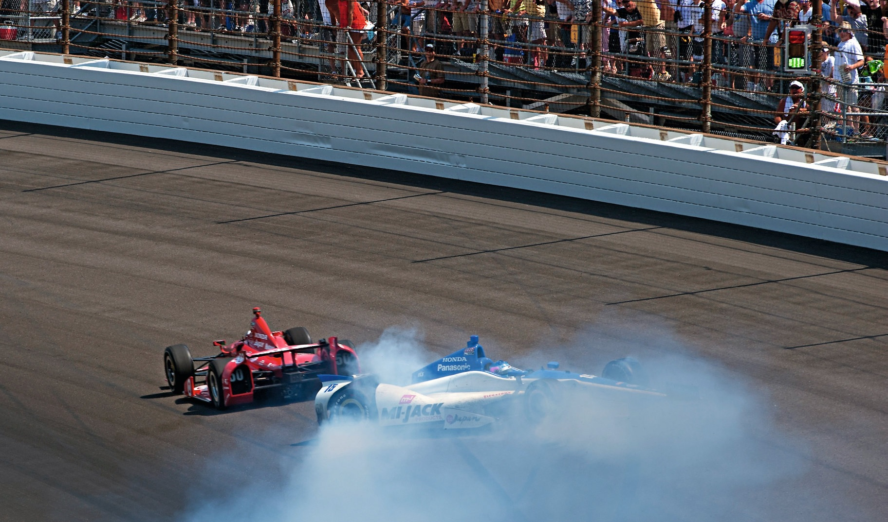
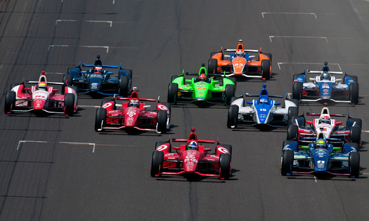
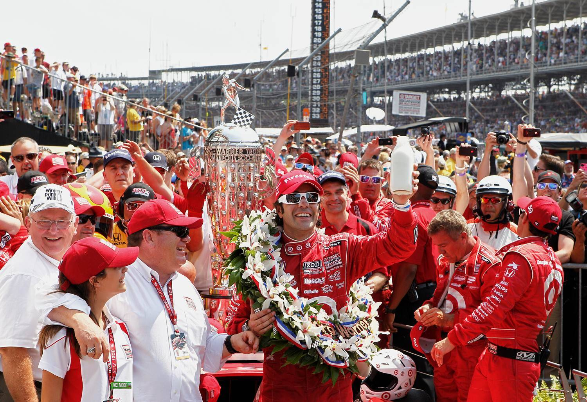

SPINNERS CAN BE WINNERS!

Não se você for Takuma Sato, mas definitivamente se você for Dario Franchitti, que sobreviveu a um pitlane punt de EJ Viso para cobrar seu terceiro sucesso na Indy 500
Por Francisco Santos
PODERIA UM FIM DE SEMANA CHEIO DE tributos ao vencedor da Indy 500 de 2011 Dan Wheldon ter terminado melhor do que ter seus três melhores amigos lutando para ter seu rosto gravado em prata ao lado dele no Troféu Borg Warner? Indianápolis é um lugar famoso onde a mágica acontece, mas, mesmo para os elevados padrões de Indy, a corrida deste ano foi para os livros. Foi Dario Franchitti quem bebeu o leite, mas os eventos que se desenrolaram nas 200 voltas que antecederam aquele momento foram cheios de intriga o suficiente para envergonhar uma sala cheia de escritores de CSI. Franchitti foi penalizado com um drive through após de ter rodado nos boxes, depois passou várias voltas lutando pela liderança com seu companheiro de equipe e sobreviveu a uma divebomb de Takuma Sato na volta final. Isso foi drama suficiente para uma corrida inteira, muito menos um carro em 33, mas tudo ajudou a contribuir para algumas voltas finais épicas. A carga final para a bandeira começou com a saída prematura de um dos favoritos da pré-corrida: Marco Andretti, que falou agressivamente suas chances nos dias anteriores à corrida, reforçadas por liderar uma parte da corrida no início, e estava correndo em oitavo e na caça quando tudo deu errado. Faltavam apenas 12 voltas para terminar quando Andretti pegou muito da linha branca, que ele afirmou ter sido o resultado de ser cortado por Oriol Servia, e subiu os trilhos e bateu na parede na Curva 1. Ele já estava descendo do carro antes que o locutor terminasse de declarar que 'a maldição de Andretti ataca novamente', mas a consequente bandeira amarela não poderia ter sido melhor- cronometrado para configurar o acabamento.

At that point, Tony Kanaan was in the lead thanks to a suspiciously good restart a few laps earlier that had gained him five places (“I’m pretty sure TK was in fourth gear by the time we were trying to get out of second,” observed Scott Dixon), but Chip Ganassi Racing twins Franchitti and Dixon were able to pass the Brazilian once the racing returned to green. Sato managed to demote the KV Racing man as well and, after watching the Ganassi duo use the tow to cycle the lead between themselves for a few laps, the Rahal Letterman-run Japanese driver decided to join the action and follow Franchitti past Dixon, taking second place with two laps remaining. “[Having Sato behind Franchitti] didn’t really have me worried, because going into Turn 1 I thought we’d have a shot at him on the back straightaway or coming to the start-finish line,” said team boss Chip Ganassi. “I wasn’t overly concerned.” His heart rate would have shot up a few moments later though, when Sato fired his car down the inside of Franchitti at the start of the final lap, only to lose the rear, hit Franchitti’s car and then spin into the wall. A few of the drivers immediately behind him suggested that the move was simply the latest from a driver known for occasional bouts of mistimed extroversion, although Franchitti himself was not one of them. “I thought it was a good move until the mistake he made – the car was obviously too loose,” he said. “Last lap of the Indianapolis 500… I wouldn’t expect him to lift at that point. I think he did everything right up until he lost the rear-end of the car. “He made a good move. But I didn’t touch him. I didn’t squeeze him down. He just lost the rear.” Sato, for his part, believed that Franchitti had not given him enough space. “I thought I had the job done,” he said. “But he kept pushing and didn’t give me enough room, so that I was well below the white line.” Barring any sudden and catastrophic mechanical problem or brainfade, the win was Franchitti’s from the moment that Sato’s car crumpled into the wall and brought out the yellows for the last lap, meaning that nobody would be allowed to overtake. Franchitti, Dixon, and Kanaan, any of whom would have been deserving winners, completed the race in Le Mans-style formation. One of the more touching ramifications of the result was the obvious conflict between the three close friends at the end – Dario elated with his achievement yet sensitive to the devastation of Dixon and Kanaan, and the latter two clearly hurting at having come so close to winning, and yet equally genuine in their delight for Franchitti. “At the end I thought it was going to be between me and Scott,” said Kanaan. “Dario comes back and wins the race. Dan… his three best friends in the top three; I don’t think it could have been any better. Well, it could have been if I won!” Franchitti: “Scott and I were racing each other hard. It’s all over, he comes up in Victory Lane. He’s my buddy. Out on the track he’s competition, but a team- mate, and then afterwards he’s my friend. I see the disappointment in his face. I see the disappointment in TK’s face. When you beat guys like that, I take that as a big accomplishment because, God, they’re not easy to beat.” Prior to the attack from Sato, Franchitti’s other big moment of the race came during the first round of stops, when he was hit from behind and knocked into a spin by EJ Viso. The clash dropped him all the way to the back of the field, and in the course of his recovery he helped account for several of the vast number of passing moves during the race. The DW12 had not been race on an oval prior to last weekend, and so strong were the tows that the final stanza of the race was almost like a restrictor-plate event in NASCAR, with no-one wanting track position at the wrong time for fear of being a sitting duck when it really mattered. After a stunning start to the season, Chevrolet and Team Penske chose this weekend to step on a landmine. With nine cars in the top 10 places on the grid you’d have forgiven Chevy for expecting to keep its unbeaten 2012 steak alive at Indianapolis, but a significant upgrade from Honda (see panel, p47), a Penske outing that oscillated between banality and disaster, and a catalogue of misfortunes for Chevy’s other big threat, Andretti Autosport, put a stop to that. Will Power had started the race having won the past three events, but that run came to an unfortunate end at the hands of AJ Foyt Racing. Briton Mike Conway had messed up his approach to the pits and collected a couple of his crew, skittling one of them across the front of his car. Nobody was hurt, but the ramifications of having a reasonably heavy-looking tyre guy roll over the front wing were dramatic. “That screwed up the front wing and we didn’t realise it until I got out [of the pits],” Conway said. “Through Turns 3 and 4 it felt a little wiggly, and I thought it was just tyre temperatures. But when I went down into Turn 1 I could see one of the endplates up in the air.” Conway lost the rear, caught it, lost it again, and swung into a spin that Power, running just behind him, had no hope of avoiding. The subsequent crash eliminated both, and an errant wheel from the collision also came very close to taking out Power’s team-mate Helio Castroneves. As it was, the stray wheel bounced off Castroneves’s front-right tyre and knocked the car out of alignment, and contributed to the Brazilian just scraping into the top 10 at the finish. Polesitter Ryan Briscoe had an equally anonymous, if less dramatic, afternoon.

He shared the lead with Andretti’s James Hinchcliffe during the opening phase of the race, but then found himself getting shuffled back into the pack and spent a lot of the race stuck in traffic. The Australian commented later that he felt that his car was good, but felt he might have paid dearly for a decision to run a little more downforce than the Ganassi machines. Plenty of other drivers took their opportunities to shine during the 200 laps. Owner/driver Ed Carpenter had just got himself up to third – having started 28th – when he lost the rear of his car and hit the wall late in the race, while Servia managed to lift the Panther/ Dreyer & Reinbold entry up to fourth without anyone really noticing and Hinchcliffe again took sixth, having lost time when he skidded over one of his air hoses during a pitstop. Englishman Justin Wilson was also in the frame for a good result before being shuffled back during the final restarts and finishing a still-respectable seventh in his Dale Coyne entry. Rubens Barrichello picked up best-rookie honours with his 11th-place finish in his debut oval race, although fellow F1 veteran Jean Alesi’s Indy 500 debut was less auspicious. He, along with the other Lotus-powered runner Simona de Silvestro, were black-flagged after a handful of laps for being outside the 105 per cent cut-off point on speed. Virtually every one of the 33 drivers in the field had a story to tell but, this year at least, many were forced to accept second billing. A year on from Wheldon’s extraordinary second Indy 500 win, the Brit continued to make his presence felt, and the close ties that the top three finishers had to him only further amplified what would have been a dramatic race by any standards. “I don’t think it could have been a better result for Dan,” Kanaan reflected. “Wherever he is right now, he’s definitely making fun of Sato. And he’s giving Dario a tap on the back, for sure. And he is going to call me a wanker that I didn’t win this thing.”.

Boutsen continuava tranquilo, controlando a liderança com toda a sua finesse, apesar dos ataques de Nannini, que havia passado Patrese, e apesar de ser escandalosamente bloqueado durante 3 voltas por Pirro, colega de Nannini... o que certamente os senhores de Paris não viram como manobra perigosa e anti-esportiva!... Na 20ª volta mais um acidente espetacular: Piquet, que já havia rodado, como a maioria, bate violentamente na traseira do Osella de Ghinzani por falta de visibilidade quando ultrapassava outro concorrente. Mas, nada disto abalava Naka-san. O japonês estava no seu dia de glória, andando como jamais; tirando 30s a Patrese e chegando a ameaçar o terceiro lugar do italiano, que, no entanto, conseguiu mantê-lo. Nakajima foi a grande figura do dia. Lehto também esteve muito bem, chegando a quinto antes de abandonar com motor quebrado. Mansell bateu violentamente. Foram 12 abandonos por batidas. Com elevados prejuízos econômicos. Apenas. Por muita sorte. Um triste final de campeonato.

Honda: push comes to Chev
Antes do fim de semana da Indy, Chevrolet havia vencido todas as corridas da temporada e garantido nove dos 10 primeiros lugares do grid. Uma grande parte do final de Chip Ganassi Racing de um a dois foi o trabalho que a Honda fez na semana entre a qualificação e a corrida para mudar as coisas.
A guerra do turbo foi resolvida a favor da Honda semanas antes da corrida, embora alguns dentro do campo Honda ainda acreditem que o Chevrolet tinha vantagem, especialmente quando um turbo adicional foi trazido para a qualificação.
Ambos os fabricantes tinham uma nova especificação de motor pronto para a corrida, e o piloto da Ganassi Scott Dixon foi efusivo em seus elogios pelo que a Honda tinha feito para fechar a lacuna. Acho que estávamos em uma situação um pouco difícil para nos qualificarmos
, disse ele. O turbo com 140 de pressão não foi vantajoso para nós [o turbo normalmente é fixado em 130 para superspeedways]. Vimos a margem escapar. Tivemos motores que foram quilometrizados, chegando ao máximo no dia da qualificação. Acho que nosso motor provavelmente não tinha a melhor potência naquele momento. "O novo motor era definitivamente melhor. A quilometragem do combustível foi muito melhor. A velocidade mesmo do Carb Day parecia ter sido melhorada no carro. Fomos capazes de rodar um pouco mais de aparo do que algumas das outras equipes, então acho que isso também acrescentou. A Honda fez um trabalho fantástico para melhorar a potência e a economia de combustível
. As melhorias foram uma surpresa para alguns dos corredores do Chevrolet, mas o chefe da equipe, Chip Ganassi, admitiu que sua equipe ainda tinha entrado na corrida com muitos pontos de interrogação. Posso lhes dizer isto, nós não [sabíamos tudo] em nosso ritmo de corrida na segunda-feira após a qualificação, ou com o presidente da Target ao telefone na segunda-feira após a qualificação, e a reunião com a Honda logo depois disso
, disse ele. Digamos apenas que não foi nosso melhor momento
.